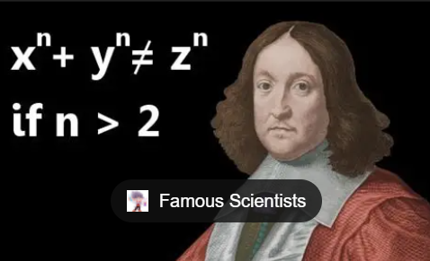

Pierre de Fermat nació el 17 de agosto de 1607 en Beaumont-de-Lomagne, Francia. Fue hijo de Dominique Fermat, un comerciante acomodado, y Claire de Long. Recibió una buena educación y más tarde estudió Derecho en la Universidad de Toulouse, donde obtuvo el título de jurista. A lo largo de su vida trabajó como magistrado en el Parlamento de Toulouse, por lo que las matemáticas fueron para él una pasión intelectual más que una profesión formal.
A pesar de no ser matemático de tiempo completo, Fermat realizó contribuciones extraordinarias que lo colocan entre los más grandes matemáticos del siglo XVII. Es considerado uno de los fundadores de la teoría moderna de números. Desarrolló importantes resultados sobre números primos, divisibilidad y potencias, y formuló varios teoremas fundamentales.
El más famoso es el llamado “Último Teorema de Fermat”, en el que afirmó que la ecuación xn+yn=zn no tiene soluciones enteras positivas para n>2. Escribió que tenía una demostración maravillosa, pero que el margen del libro era demasiado pequeño para contenerla. Este problema permaneció sin demostración durante más de 350 años, hasta que fue resuelto en 1994 por Andrew Wiles.
Fermat también hizo aportaciones clave al desarrollo del cálculo, trabajando de manera independiente en métodos para encontrar máximos, mínimos y tangentes a curvas, anticipándose a ideas que luego serían fundamentales en el cálculo diferencial. Además, junto con Blaise Pascal, sentó las bases de la teoría de la probabilidad a través de su correspondencia sobre problemas de juegos de azar.

Murió el 12 de enero de 1665 en Castres, Francia. Aunque publicó poco en vida y muchas de sus ideas se conocieron por cartas o anotaciones en los márgenes de libros, hoy es reconocido como una figura esencial en la historia de las matemáticas, especialmente en la teoría de números y en los orígenes del cálculo.